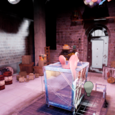

I'm a first-year Master of Science in Computer Science student at Stanford University, speciallized in Real-World Computing. I achived my Honors Degree of Bachelor of Science in Computer Science at Shanghai Jiao Tong University in Jun. 2019 where I was a member of Zhiyuan Honors Program of Engineering. You can find me at here.
My acedemic interests basically lie in Computer Graphics. Most of my work is related to photo realistic rendering like ray tracing, while a bunch of other topics remain attractive to me, including appearance modeling, physical simulation and deep learning in Computer Graphics.
I code, I paint, I make music.
Education
Stanford University

Shanghai Jiao Tong University
Research Experience
DMCV, SJTU
I joined the
Lab of Digital Media
on SJTU computer science department in Feb. 2017 as an Undergraduate Researcher & Research
Assistant under the supervision of Prof.
Lizhuang Ma.
Working Experience
Graphics Game Software Engineer Intern, Intel R&D
VCE, GSE, DRD, IAGS (CVCG) graphics c++ development
**Since Dec. 12, 2018, Core and Visual Computing Group (CVCG) changes its name to Intel
Architechture, Graphics and Software (IAGS)**
As a member of Visual Computing Enabling Group (VCE), I deal with game engine rendering
optimization, especially implementing and improving threaded rendering performance on
multicore Intel CPUs. I
focused on optimization of Unreal Engine 4.19-4.21.
Publication
Light Transport Simulation via Generalized Multiple Importance Sampling
[Paper]
Qi Liu,
Yiheng Zhang, Lizhuang Ma
Selected Projects
Multiple Network Rendering Denoiser (with Zhouyingcheng Liao) (ongoing research)

Multithread Rendering in UE4

A benchmark demo made for Intel and developers for optimizing and testing multiple threaded
rendering performance of Unreal Engine 4.
This demo was originally released as an official sample of DirectX 11 SDK. I modified and
transplated it.
[Uproject]
[Sdkmesh Tool]
U-net Interactive Object Selection (with Yuheng Zhi)
 A open-source object selector finished with one fellow student using U-net. Complete
pipeline is built with python.
A open-source object selector finished with one fellow student using U-net. Complete
pipeline is built with python.
[Code]
work followed:
Deep Interactive Object Selection
(CVPR2016)
Simple Path Tracer
 My implementation of a path tracing renderer. Reflection, refraction and Phong are
included.
My implementation of a path tracing renderer. Reflection, refraction and Phong are
included.
[Code]
**Basic mathematical utilities credit to SmallVCM**
Interactive Auto Geometry Primitive Cutter and UV Mapper
 This is a work based on Iso-chart algorithm
and cooperated with 51VR company aimed to provide
artists with a quick interactive approach to get desired primitive cuts and UV map. An
Autodesk 3DsMax plug-in was built and tested.
This is a work based on Iso-chart algorithm
and cooperated with 51VR company aimed to provide
artists with a quick interactive approach to get desired primitive cuts and UV map. An
Autodesk 3DsMax plug-in was built and tested.
Miscellaneous
Music and art never make me bored.
I have a metal band on which I am both a guitarist and a composer. Personally I do some
primary mix engineering in Rock/Metal Music. I studied calligraphy for 8 years and studied
painting
for 9 years before entering university. Deep inside the beauty of art give me the motivation for
visual computing research.